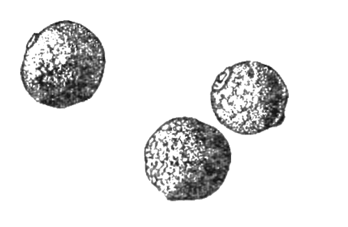
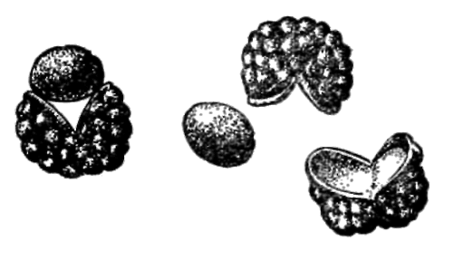

«Душистые перцы»

Под этим названием встречается в торговле и употребляется в кулинарии несколько пряностей, причем ни одна из них не имеет ничего общего с настоящими перцами — растениями семейства перечных.
Доминирующим свойством всех «душистых перцев» является их повышенная и чрезвычайно стойкая ароматичность самых разных оттенков. Ниже приведено описание трех наиболее употребительных «душистых перцев».
Ямайский перец (Pimenta officinalis L.)
Синонимы: гвоздичный перец, ормуш, английский перец, английская пряность, всепряность, четверопряность, пимент. Дерево семейства миртовых.
Родина — острова Карибского бассейна, главным образом Ямайка, дающая почти 85% мирового производства ямайского перца, а также Гаити, Сан-Доминго, Куба.
В качестве пряности употребляются сорванные незадолго до полной спелости и высушенные в тени плоды, представляющие в готовом виде «горошины» размером вдвое-втрое крупнее «горошин» черного перца, неровной серо-буроватой окраски. В растертом пудрообразном виде ямайский перец имеет красивый ровный темно-бежевый цвет с красноватым отливом. Он обладает сильным запахом, совмещающим в себе запах гвоздики, черного перца, мускатного ореха и корицы. Именно поэтому он получил во Франции название «четверопряности» (катрэпис), проникшее затем в международную кулинарную терминологию.

Ямайский перец широко применяется во всех видах маринадов (мясные, рыбные, овощные, фруктово-ягодные, грибные) и во всевозможных рыбных блюдах (супы, заливное, рыбные фарши, подливки и соусы к отварной рыбе), где бывает просто незаменим. В западноевропейской кухне это излюбленная пряность для ароматизации мясных супов, студней, домашних колбас, ветчины, запеченной телятины, мясных рулетов и запеканок, мясных соусов и соусов к мясу. Реже применяется ямайский перец при приготовлении сладких блюд и кондитерских, изделий, где он выступает обычно как один из компонентов в смеси с другими пряностями.
Ямайский перец плохо растворим в воде, поэтому он, в отличие от гвоздики, может подвергаться более длительному кипячению и в супы его можно закладывать за полчаса до готовности. Это свойство ямайского перца служит причиной значительной разницы в нормах его закладки в зависимости от того, в какую среду его помещают: холодную воду, кипящую воду или уксусный раствор. Так, при засолке грибов, когда грибы просто пересыпают пряностями и ямайский перец попадает просто во влажную среду, требуется до 10 горошин перца на 1 килограмм отваренных грибов, а в студень столько же на 1 килограмм мяса. В супы же достаточно положить по 5 горошин на 1 килограмм мяса или рыбы, а в маринад всего 2 горошины на 1 килограмм грибов (нормы закладки ямайского перца в маринады в общем соответствуют нормам закладки гвоздики, хотя могут быть несколько выше). Во все перечисленные выше блюда душистый перец вводят в целом виде (горошком), в тесто и пудинги — в молотом виде, причем в этом случае нормы закладки еще более сокращаются: до 1 — 2 горошин на 1 килограмм теста.
Японский перец (Zanthoxylum piperitum D. С)
Синонимы: зантоксилюм перечный, перечник, чуань-цзяо, хуацзе. Кустарник семейства рутовых.
Родина — Северный Китай, Корея, Япония. Встречается в Монголии. Собирают и сушат зрелые плоды кустарника, растущего в диком виде. Готовая пряность представляет собой плодики-капсулки, чаще всего полураскрытые на две створки и образующие кожурки, из которых выпадает темное, почти черное яйцевидное семечко диаметром 2—2,5 миллиметра. Цвет самих кожурок — светло-коричневый снаружи и желтоватый изнутри, внешняя поверхность их пупырчатая. Японский перец обладает чрезвычайно тонким и вместе с тем сильны.м характерным запахом, в котором как бы присутствует аромат цитрусовых, что делает его совершенно отличным от аромата ямайского перца — японский «душистый перец» дает совершенно иную ароматическую «окраску» блюду.
Употребляется он главным образом на Дальнем Востоке (Корея, Япония, Китай) и на Тихоокеанском побережье США. В Европе и Америке идет главным образом на ароматизацию блюд из моллюсков и ракообразных (трепанги, морские гребешки, кальмары, голотурии, крабы, креветки, лангусты), соусов к рыбным салатам и для сдабривания зеленого чая.

В странах Дальнего Востока широко используется в соусах к рыбе и морепродуктам, в мясных блюдах, в кондитерских изделиях и сладких блюдах, где его сочетают с корицей и имбирем (компоты, кисели, варенья, пудинги). Закладку японского перца производят за 5 — 7 минут до готовности блюда. Нормы закладки: от 2 — 3 до 8 горошин на порцию. При этом закладываются в основном кожурки, а не семечки, поскольку ароматическое начало сконцентрировано в кожурках.
Райское зерно, или малагетта (Amomum Meleguetta Rosс)
Синонимы: амомум, «гвинейский перец», маллагветский, мелегетский, мелегветский, манигветский перец. Травянистое растение семейства имбирных.
Родина — тропическая Западная Африка, побережье Сьерра-Леоне и Либерии (Перцовый берег).
В качестве пряности используются зрелые, сухие семена — округлые; с чуть заметными тупыми ребрами, блестящие буроватые «горошины» с шагреневой поверхностью, диаметром 3 миллиметра. Отличаются крайне жгучим вкусом в сочетании с острым ароматом, свойственным только райским зернам.
Малагетта под именем «райских зерен» с незапамятных времен применялась в Африке и на Ближнем Востоке, с XIII века ее начали использовать как самостоятельную или заменяющую черный перец пряность в Англии, а позднее — в Канаде, США, Австралии. С конца XIX века применение райских зерен сократилось. Ныне они используются в английской ликероводочной и пивоваренной промышленности для ароматизации крепких алкогольных напитков — виски и бренди, а также английского эля, главным отличительным и обязательным компонентом которого они являются.
В странах Африки малагетту используют для приготовления мясных и овощных горячих блюд, а в Америке как редкую пряность для ароматизации ликеров, настоек, уксусов.